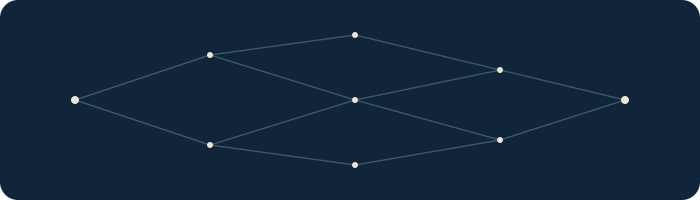

Shreeya Kamath
Where the Stars Meet the Sea
AI research · Responsible ML · Agentic systems · Software engineering
About me
I explore the space between mathematical ideas and systems that work in the real world. My interests include probabilistic inference, fairness-aware machine learning, LLMs, and multi-agent systems. I care about how intelligent systems are built—and how we evaluate whether their decisions are reliable and responsible.
Selected projects
Five points of light in an evolving constellation.
01 / INFERENCEFairness Preservation Under Computational BudgetsFair probabilistic inference under limited computation
02 / AGENTSMedTrustTrustworthy multi-agent clinical decision support
03 / RESPONSIBILITYFAIRPATH-EDUFairness-aware AI for education
04 / ENGINEERINGManipalDMSDesktop document management with C# and SQL Server
05 / LEARNINGInteractive Learning PlatformAccessible, interactive educational software

Beneath the surface
Probabilistic graphical models · Fairness evaluation · Trustworthy AI · Machine learning · LLMs · Multi-agent systems
What assumptions does a model make? What trade-offs does a system introduce? How can we test the results?
My toolkit
| Languages | Python · C# · SQL · HTML/CSS |
| AI & research | Machine learning · Probabilistic models · Fairness evaluation · Jupyter |
| Engineering | Git · GitHub · Docker · SQL Server |